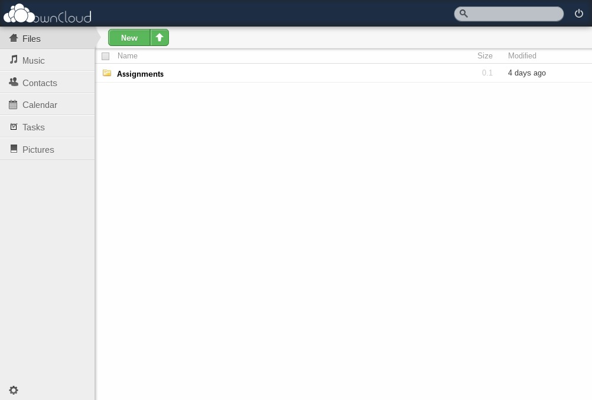

ownCloud is a framework for personal cloud services that you can run on any server, for work or personal use. In plain English, it gives you many of the same services that platforms like Google can provide for you on a daily basis. But, as with everything else in this guide, you get the benefit of assuring your own data and full ownership as well.
ownCloud has many features, as well as a plugin system that allows even more to be added externally. Here is a brief summary of its core functionality:
Files - ownCloud can host your files for you, much in the same way you would do with your Google Drives or Google Docs. You can then access them on any web-enabled device, anywhere around the world, just like your Google Drive. The only difference is that you cannot -yet- edit rich text documents or spreadsheets like you can with Google Drive. That being said, it has built-in document readers (including for PDF) which makes it a decent everyday alternative to the file storage features of Google Drive.
Music - You can also host your music library with ownCloud and be able to play it from anywhere in the world. This is a major plus if you have a phone or music device with limited storage space, and you cannot put everything you want on the device at once. Or, if you are at a friend's home and you want to show him some of your new tracks. ownCloud's built in music player is fast and easy to use.
Photos - Just like you can host your music and files, you can also store your photos, eliminating the need for external services like Flickr or Picasa. Set up galleries and share them with others via the built-in interface.
Contacts - One of my personal favourite features of ownCloud is its contact storage system. First, you can set up and access your email/phone contacts easily from the web interface. But where it really shines is its CardDAV syncing system. You can set it up to sync with your other computers and devices whenever a contact is added on any of them, easily replacing the contact sync features of Gmail or Apple's iCloud.
Calendar - With the built-in calendar system you can view your schedule locally or remotely. But where it gets really useful - like with Contacts - is the sync capability. You can sync your devices' calendars with your ownCloud calendar via CalDAV, and whenever you add or modify an event from one of these devices, all the others will update seamlessly. This replaces Google Calendar or Apple's iCloud.
Tasks - This feature isn't as cleanly implemented as it should be (yet), but you can easily keep track of your tasks via the ownCloud's easy-to-use web interface.
Download the latest ownCloud source from its website here. Make sure you choose the most recent branch of code available - at the time of writing that is 4.5.
Note that you will need to have Apache installed and configured properly to use ownCloud. Don't skip that guide! We cover Apache installation in guide 3.9.
Extract the package to the path of your choice. If this is the only web service you will use on your server, that path would be /var/www/; otherwise, you should extract it to /usr/share/.
tar -xvjf owncloud-*.tar.bz2
cp -r owncloud /path/of/your/choice
Next, go into that directory and make sure that certain critical files have the correct permissions. Change the owner of "apps" "config" and "data" folders, and all of their contents, to that of the webserver application. This guide will assume that you are running Apache as your webserver, like we established earlier in the guide, so that user is named www-data.
cd /usr/share/owncloid
mkdir data
chown -R www-data:www-data /usr/share/owncloud/install/apps
chown -R www-data:www-data /usr/share/owncloud/install/config
chown -R www-data:www-data /usr/share/owncloud/data
Next we will set up our Apache VirtualHost file for this service. This guide will show how to make a configuration that works over HTTPS, and automatically redirects any HTTP connections to HTTPS. Create a new file in /etc/apache2/sites-available named owncloud that resembles something like this:
ServerName subdomain.mydomain.com
DocumentRoot /usr/share/owncloud
RewriteEngine On
RewriteCond %{SERVER_PORT} !^443$
RewriteRule ^.*$ https://%{SERVER_NAME}%{REQUEST_URI} [L,R]
Now, create one named owncloud-ssl in the same folder, replacing the SSL certificate location and information where necessary.
ServerName remote.jcook.cc
DocumentRoot /usr/share/owncloud
AllowOverride All
SSLEngine On
SSLCertificateFile /etc/ssl/certs/mycertificate.crt
SSLCertificateKeyFile /etc/ssl/private/myprivatekey.key
Make sure you include the AllowOverride All in there; that will allow ownCloud to set its own custom parameters for security purposes.
Save these and activate them in Apache, then we are ready to go!
sudo a2ensite {owncloud,owncloud-ssl}
sudo service apache2 reload
Open up your browser and navigate to the server name that you set up earlier. You will be guided through an installation wizard that will set up a database and administrative user. For more information about this, refer to guide chapter 3.9.

Once ownCloud is properly set up, you will see its main screen which is easily identifiable. Click the gear icon and you will eventually find the Admin screen, where you can personalize more about your ownCloud implementation.

And that's it! You can use its intuitive interface to store and share your files, set up calendar appointments, and organize the media. Have fun with your own personal cloud!
As the contacts and calendar features of ownCloud are so helpful, this guide will also explain how to synchronize them with your personal devices.
To synchronize your contacts with Thunderbird:
To synchronize your calendar with Thunderbird:
To keep your ownCloud folder synchronized with a folder on your computer, the easiest way is to install the custom ownCloud client for desktop. There are versions for Windows, Mac OS X and Linux. Go to the sync clients page, download the installation package, and follow the easy-to-use wizard to get it set up.
On Android, you must download/purchase a couple of applications in order to sync your contacts and calendars.
For contact sync, download CardDAV Sync from the Play Store. From here, you can add a Sync account from your Preferences application, just like if you were to add a Google account to your phone. For calendar sync, download CalDAV Sync which is made by the same developer and can be configured similarly.
For file synchronization, there is the ownCloud app that will enable cloud sync between your phone and your ownCloud server. Or, you can use any "cloud sync" app on the Android that supports the WebDAV format. Just go into ownCloud, click Settings > Personal, then copy the WebDAV link into the application.